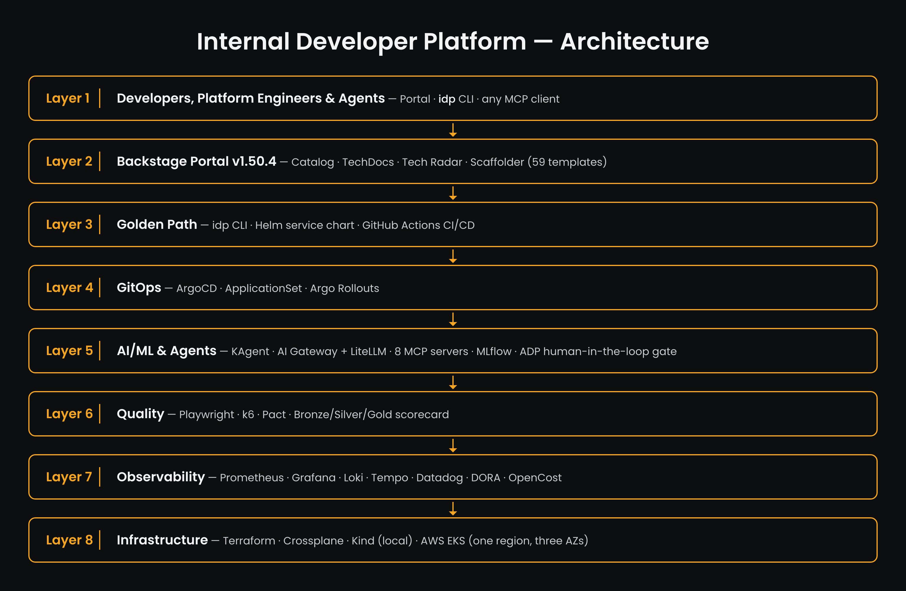
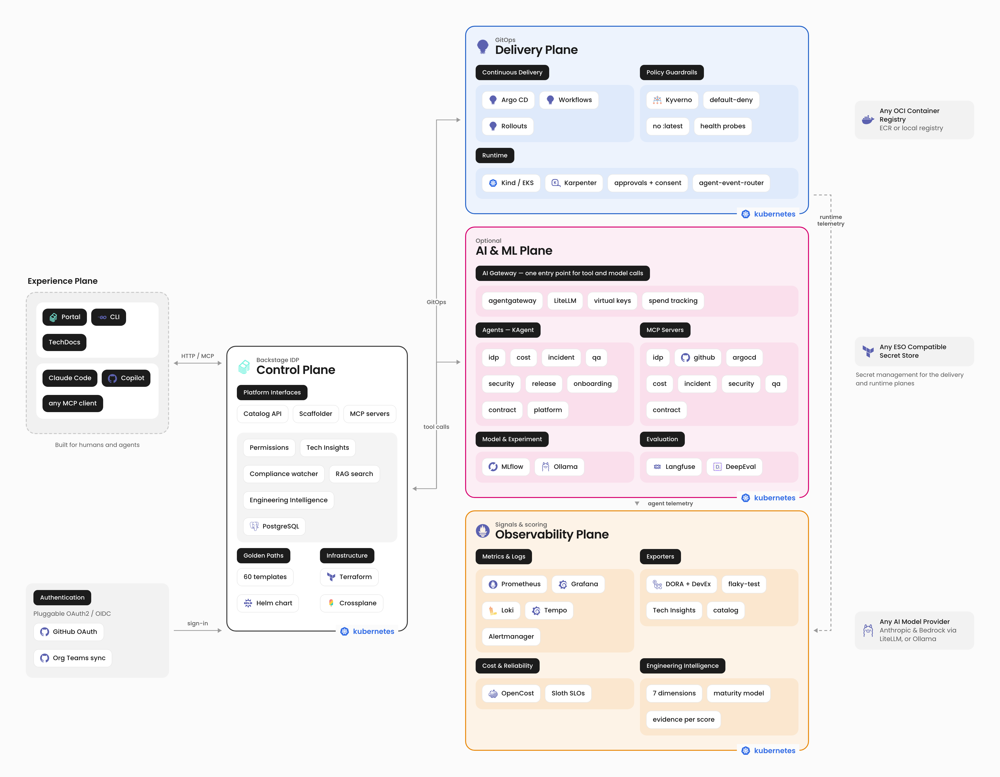
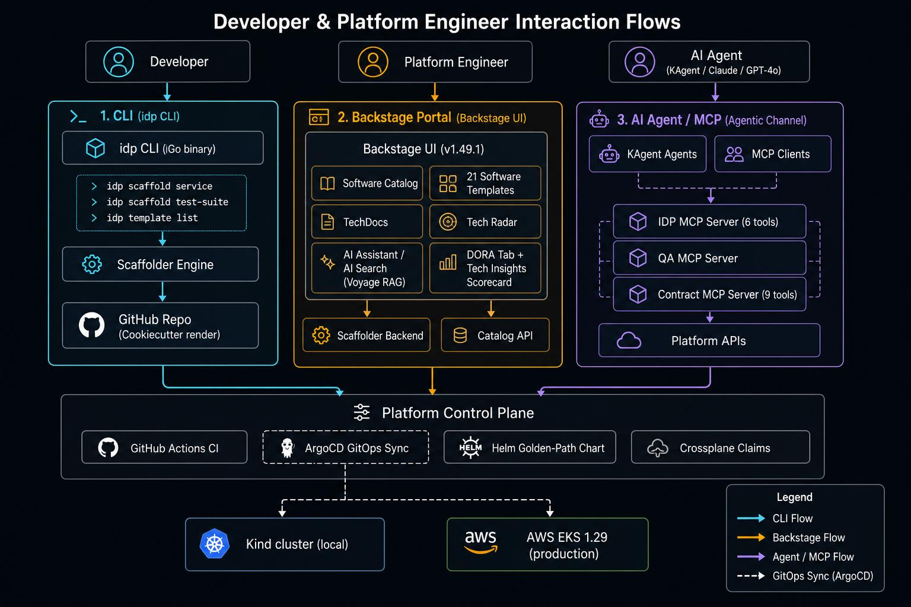
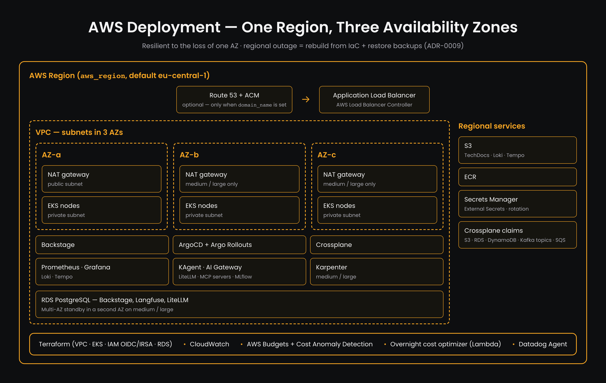

Platform Architecture¶
Design decisions¶
Recorded as ADRs under docs/design/, so the reasoning survives the decision:
- ADR-0001: Where batch and pipeline work runs — GitHub Actions vs CronJob vs Argo Workflows, and why CI stays in Actions.
- ADR-0002: How services get deployed — ApplicationSets as the only deploy mechanism, and Argo Rollouts as a chart feature.
- ADR-0003: Incident records, and where their state lives — GitHub issues as the source of truth, one severity vocabulary, deterministic postmortems.
- ADR-0004: Identity and access —
why guest auth was removed from production, and how GitHub Org Team sync
became the source of truth for catalog Users/Groups and sign-in — including
the
GITHUB_TEAMS_ORGpersonalisation variable for forks that host their repo on a personal account but need a real Org for identity sync. - ADR-0005: LLM serving and agent frameworks — the mock vs Ollama vs vLLM split, one shared model server, and why LangGraph is a template rather than a platform service.
- ADR-0007: One gateway for MCP tools and model traffic — agentgateway over Envoy AI Gateway, why the gateway is default-on rather than opt-in, unprefixed tool names, and why inbound auth is not a boundary until NetworkPolicy is enforced.
- ADR-0008: LiteLLM as the central multi-provider model backend —
why Bedrock was wired via LiteLLM instead of agentgateway's own native
provider: bedrockpath, the empirical spike that ruled outprovider: openAIin favor ofprovider: anthropic+baseUrl, and why it's opt-in on local. - ADR-0006: Engineering Intelligence — why the scoring engine is a standalone package rather than a fourth scorecard, why it persists its own snapshots, and why unmeasurable dimensions report no number.
Overview¶

Eight layers, top to bottom: the people and agents using the platform → the Backstage portal (59 templates) → golden paths (idp CLI, Helm chart, GitHub Actions) → GitOps (ArgoCD, ApplicationSet, Argo Rollouts) → AI/ML and agents (KAgent, AI Gateway + LiteLLM, 8 MCP servers, MLflow, ADP gate) → quality gates → observability (Prometheus, Grafana, Loki, Tempo, Datadog, DORA, OpenCost) → infrastructure (Terraform, Crossplane, Kind locally, EKS on AWS). Source: docs/diagrams/platform-architecture.html.
Platform Planes¶

The systems view: five planes, each independently installable. The core IDP runs without the AI and Observability planes, and the AI plane holds no privilege the planes above it do not already grant.
| Plane | What's in it |
|---|---|
| Experience | The Backstage portal, the idp CLI and TechDocs for people; Claude Code, Copilot or any MCP client for agents. Sign-in is GitHub OAuth, with catalog groups synced from GitHub Org Teams |
| Control | Backstage: catalog, scaffolder (59 templates), Tech Insights scorecard plus the compliance watcher, RAG search, Engineering Intelligence; Terraform and Crossplane for infrastructure |
| Delivery | Argo CD, Workflows and Rollouts; Kyverno guardrails; Kind or EKS with Karpenter; the approval service (human approvals + user consent for agent actions) and the agent event router |
| AI & ML (optional) | The AI Gateway is the single entry point: agentgateway routes every MCP tool call and every model call, and LiteLLM behind it serves Anthropic and Bedrock with virtual keys and spend tracking. Behind it: 9 KAgent agents, 8 MCP servers, MLflow, Ollama, Langfuse and DeepEval |
| Observability (optional) | Prometheus, Grafana, Loki, Tempo, Alertmanager; DORA, flaky-test and Tech Insights exporters; OpenCost and Sloth SLOs; Engineering Intelligence scoring |
The diagram is generated from diagrams/platform-planes.html, so update it there when a plane changes.
Local vs AWS at a glance¶
| Layer | Local | AWS |
|---|---|---|
| Compute | Kind (Kubernetes in Docker) | Amazon EKS 1.35 |
| Container registry | Local registry (localhost:5003) |
Amazon ECR |
| Ingress | nginx ingress controller | AWS Load Balancer Controller (ALB) |
| CI / CD | GitHub Actions → idp:deploy-local Backstage action |
GitHub Actions (OIDC → ECR → EKS) |
| IaC (foundation) | — | Terraform (EKS, VPC, ECR, IAM, RDS, S3, Secrets Manager) |
| IaC (per-service) | — | Crossplane (S3, RDS, MSK, DynamoDB, SQS) — Claims in Git, reconciled by ArgoCD |
| Deployment | Helm (helm/service-template) |
Helm (helm/service-template) |
| Developer portal | Backstage (Docker Compose) | Backstage (EKS) |
| Observability | Prometheus + Grafana | CloudWatch + Grafana + Datadog Agent (infra/APM) |
| LLM observability | Langfuse (default) — in-cluster Postgres + ClickHouse + MinIO | Langfuse (default) — RDS + S3 via Terraform, IRSA-scoped |
Interaction Model¶

Three channels connect developers, platform engineers, and AI agents to the platform control plane:
| # | Channel | Entry point | Reaches |
|---|---|---|---|
| 1 | CLI (idp) |
idp scaffold service, idp template list |
Scaffolder Engine → GitHub repo → CI |
| 2 | Backstage Portal | Software Catalog, 21 software templates, 18 QA templates, TechDocs, Tech Radar, AI Assistant, DORA tab, Tech Insights | Scaffolder Backend → Catalog API → ArgoCD |
| 3 | AI Agent / MCP | KAgent agents (IDP, QA, Contract assistants) powered by Claude / GPT-4o | IDP MCP Server (6 tools), QA MCP Server, Contract MCP Server (9 tools) → Platform APIs |
All three channels converge on the Platform Control Plane: GitHub Actions CI, ArgoCD GitOps sync, Helm golden-path chart, Crossplane Claims — targeting Kind locally or AWS EKS 1.35 in production.
┌─────────────────────────────────────────────────────────────────────┐
│ Developer Experience │
│ ┌────────────────── ┐ ┌──────────────┐ ┌────────────────────────┐ │
│ │ Backstage │ │ GitHub │ │ create-service.sh │ │
│ │ Portal │ │ (source) │ │ (CLI scaffold) │ │
│ │ + AI Assistant │ └──────┬───────┘ └────────────────────────┘ │
│ │ + custom actions │ │ push │
│ └──────┬───────┬────┘ │ │
└─────────┼───────┼──────────────┼─────────────────────────────────────┘
│ │ │
scaffold│ deploy │ push
│ (idp:deploy-local) ▼
│ │ ┌──────────────────────────────────────────┐
│ │ │ CI/CD Layer │
│ │ │ GitHub Actions (ubuntu-latest) │
│ │ │ install → test → docker build → /healthz│
│ │ └────────────────┬─────────────────────────┘
│ │ │ (AWS CD — planned)
▼ ▼ ▼
┌───────────────────────────────────────────────────────────────────── ┐
│ Local: Kind cluster / AWS: EKS │
│ │
│ namespace: services namespace: monitoring │
│ ┌──────────────────────┐ ┌────────────────────────────────┐ │
│ │ Deployments (Helm) │ │ kube-prometheus-stack │ │
│ │ Services │ │ (Prometheus + Grafana + │ │
│ │ Ingress (nginx/ALB) │ │ AlertManager + Pushgateway) │ │
│ └──────────────────────┘ └────────────────────────────────┘ │
│ │
│ namespace: kagent namespace: ml-platform │
│ ┌──────────────────────┐ ┌────────────────────────────────┐ │
│ │ KAgent (AI agents) │ │ MLflow tracking server │ │
│ │ idp-assistant Agent │◄───────►│ S3/MinIO artifact store │ │
│ │ contract-assistant │ │ │ │
│ │ IDP MCP Server │ └────────────────────────────────┘ │
│ │ QA MCP Server │ │
│ │ Contract MCP Server │ namespace: services-dev │
│ └──────────────────────┘ ┌────────────────────────────────┐ │
│ │ contract-mcp-server (port 3003)│ │
│ │ idp-mcp-server (port 3001) │ │
│ │ qa-mcp-server (port 3002) │ │
│ └────────────────────────────────┘ │
└───────────────────────────────────────────────────────────────────── ┘
│ (AWS only)
▼
┌─────────────────────────────────────────────────────────────────────┐
│ AWS Infrastructure (Terraform) │
│ VPC → Private/Public Subnets → EKS → ECR → IAM (OIDC/IRSA) │
└─────────────────────────────────────────────────────────────────────┘
Key Design Decisions¶
Convention over configuration¶
Every service gets the same: container registry, CI workflow, Helm chart structure, health check paths, namespace, and monitoring. Developers don't configure these — they inherit them from the golden path.
Helm as the single deployment abstraction¶
The helm/service-template chart is the single deployment unit for both local (Kind) and cloud (EKS). Service teams override only two files — helm-values-local.yaml (Kind/nginx) or helm-values-aws.yaml (EKS/ALB) — no raw Kubernetes YAML.
CI only in GitHub Actions (for now)¶
Scaffolded service workflows run test on ubuntu-latest. No self-hosted runners are required. CD is handled by the idp:deploy-local Backstage action (local) or will be added as an AWS deploy job when secrets are configured.
Custom Backstage action for local deploy¶
idp:deploy-local is a backend module registered in the Backstage scaffolder. It runs helm upgrade --install from inside the Backstage container using a kubeconfig rewritten to reach the host's Kind cluster via host.docker.internal.
OIDC for keyless CI/CD auth (AWS)¶
GitHub Actions authenticates to AWS via OIDC (aws-actions/configure-aws-credentials), eliminating long-lived secrets. The IAM role is scoped to the specific GitHub org.
IRSA for pod-level AWS access¶
Kubernetes service accounts are annotated with IAM role ARNs. Pods assume fine-grained IAM roles without node-level credentials (EKS IRSA). IRSA roles exist for: Backstage, ESO (shared), DORA exporter, Grafana (CloudWatch read), Grafana ESO (reads only idp-mvp/grafana), LiteLLM ESO (reads only idp-mvp/kagent + idp-mvp/litellm), MLflow (S3), KAgent ESO (Secrets Manager).
External Secrets Operator (AWS)¶
ESO syncs secrets from AWS Secrets Manager into Kubernetes Secret objects. A single cluster-scoped ClusterSecretStore named aws-secretsmanager is created during bootstrap and shared by all ExternalSecret resources (Backstage credentials, DORA exporter token, KAgent API key). The ESO ServiceAccount is annotated with the Backstage IRSA role ARN so it can read idp-mvp/* secrets without static credentials.
Observability parity (local = AWS)¶
Both environments use kube-prometheus-stack (Prometheus + Grafana + AlertManager bundled). AWS uses gp3 persistent volumes; local uses hostPath. Both install Prometheus Pushgateway as a separate Helm release so that apply-catalog-exporter.sh and the exporter CronJobs can push metrics without modification.
On AWS only Grafana gets a public ALB. Prometheus, AlertManager, Pushgateway, OpenCost and the Argo Rollouts dashboard deliberately have no ingress: each one costs ~$16/mo for a load balancer, and each was internet-facing with no authentication in front of it. They are operator tools reachable with kubectl port-forward — bootstrap.sh prints the exact command for each in its closing banner. Consolidating the remaining ALBs behind one hostname needs DNS; see the cost section of the deployment guide.
AWS Load Balancer Controller (AWS)¶
All Ingress resources use ingressClassName: alb, backed by the AWS Load Balancer Controller. Supports target-type: ip (pod-level routing without NodePort).
IaC split: Terraform (foundation) + Crossplane (per-service)¶
Both tools coexist by lifecycle, not by resource type. Terraform owns one-shot foundation (VPC, EKS, IAM, ECR, Secrets Manager scaffolding, and the IRSA role Crossplane providers assume). Crossplane owns day-2 per-service resources (S3, RDS, MSK topics, DynamoDB, SQS) requested via Backstage scaffolder templates and reconciled in-cluster by ArgoCD — no manual terraform apply step. See crossplane-vs-terraform.md for the decision matrix and crossplane.md for the end-to-end flow.
Repository Layout¶
The repository is split into three top-level directories based on deployment target:
local/ → 100% local-only (Kind / Rancher Desktop)
aws/ → 100% AWS-only (EKS / Terraform / Secrets Manager)
kubernetes/ → 100% shared (applied by both bootstrap scripts)
| Directory | Owned by | Contains |
|---|---|---|
local/ |
bootstrap-local.sh |
Kind cluster config, nginx ingress values, Docker Compose for Backstage, local ArgoCD ApplicationSet, local Prometheus values, DORA exporter (local) |
aws/ |
bootstrap.sh |
ArgoCD values + app-of-apps, External Secrets Operator, Crossplane providers + compositions, Backstage K8s deployment + external secret, KAgent AWS values/ingress/secret, ALB ingresses, MLflow (S3 backend), DORA exporter (AWS), AWS Prometheus values |
kubernetes/ |
Both scripts | Namespaces (namespaces.yaml, services-quota.yaml), RBAC, OPA/Gatekeeper policies, Kyverno team policies (policies/kyverno/), team entities, shared monitoring dashboards (ConfigMaps), KAgent agent CRDs, Backstage RBAC + configmap |
kubernetes/namespaces/services-quota.yaml |
Both scripts | ResourceQuota + LimitRange for services-dev/staging/prod namespaces |
kubernetes/policies/kyverno/ |
Both scripts | Kyverno ClusterPolicies: team-quota-policy.yaml (auto-generate quota from tier label), crossplane-team-label-policy.yaml (inject idp:team tag + require owner/costCenter) |
kubernetes/rbac/cluster-roles.yaml |
Both scripts | idp-developer, idp-team-lead, idp-platform-admin ClusterRoles |
terraform/ |
Manual (terraform apply) |
EKS, VPC, RDS, ECR, IAM/OIDC, Secrets Manager scaffolding, iam-team-secret-store.tf (per-team ESO IAM roles) |
helm/service-template/ |
Both | Single Helm chart used by every service |
helm/values-tiers/ |
Manual | Small/Medium/Large Helm value tiers for Backstage and ArgoCD |
services/<svc>/ |
Per-service CI | Legacy flat service values: helm-values-local.yaml (Kind), helm-values-aws.yaml (EKS) |
teams/<teamName>/services/<svc>/ |
Per-team CI | Team-scoped service values (auto-discovered by per-team ApplicationSet) |
backstage/catalog/all-templates.yaml |
Both | Single Location file indexing the 63 AWS-shared templates (the 64th, deploy-to-kind, is local-only and registered in app-config.local.yaml); replaces the individual URL entries previously listed in app-config.aws.yaml |
observability/ |
Both | Shared alerting rules, Grafana dashboards (grafana-helm-values.yaml with sidecar enabled), DORA/tech-insights exporters |
backstage/ |
Both | Portal source, app-config.yaml (base), app-config.local.yaml (local overrides), catalog templates (all tagged v1 + blessed/advanced) |
scripts/ |
Both | bootstrap-local.sh (local), bootstrap.sh (AWS), bootstrap-ai.sh (both), shared lib.sh |
Bootstrap script ownership:
- bootstrap-local.sh reads from local/ + kubernetes/ only — never touches aws/
- bootstrap.sh reads from aws/ + kubernetes/ only — never touches local/
AI/ML Platform¶
How the AI Assistant works end-to-end¶
Backstage UI (extensions.tsx)
AiAssistantPage — React chat component at /ai-assistant
│
│ POST /api/proxy/kagent/a2a/kagent/idp-assistant (A2A JSON-RPC)
│ GET /api/proxy/kagent/api/sessions/<id> (poll for response)
▼
Backstage proxy → KAgent UI (kagent-ui.kagent.svc.cluster.local:8080)
A2A server routes to the idp-assistant Agent CRD
│
│ MCP over Streamable HTTP
▼
IDP MCP Server (idp-mcp-server:3001/mcp)
catalog_search → Backstage catalog API
get_service_metrics → Prometheus
list_templates → Backstage catalog (Templates)
get_template_params → Backstage catalog entity
scaffold_service → Backstage scaffolder v2
list_deployments → Kubernetes apps/v1 API
Scaffolding flow (single agent turn)¶
When the user provides name, description, and owner in one message, the agent
completes the entire scaffold in one response turn without asking for confirmation:
The agent manifest (kubernetes/kagent/idp-agent.yaml) enforces this via the
system message: Rule 4 requires scaffold_service to be called immediately once
all required fields are known, and Rule 5 defines those fields as name,
description, and owner.
Key files¶
| File | Purpose |
|---|---|
backstage/app/packages/app/src/extensions.tsx |
AI Assistant React page + chat polling logic |
backstage/app-config.yaml |
KAgent proxy target (in-cluster) |
backstage/app-config.local.yaml |
KAgent proxy target override (local ingress) |
kubernetes/kagent/idp-agent.yaml |
Agent CRD: model, system message, tool allowlist |
kubernetes/kagent/ai-gateway-toolserver.yaml |
The one RemoteMCPServer CRD — points at the AI Gateway, which multiplexes all eight MCP servers |
kubernetes/ml-platform/ai-gateway.yaml |
AI Gateway (agentgateway) Deployment, Service and routing config |
kubernetes/kagent/modelconfig.yaml |
Claude Anthropic model configuration |
services/idp-mcp-server/src/index.ts |
MCP server implementing all 6 tools |
For the full deep-dive see docs/ai-assistant.md.
Component Inventory¶
| Component | Path | Purpose |
|---|---|---|
| EKS cluster | terraform/eks.tf |
Cloud compute platform |
| VPC | terraform/vpc.tf |
Network isolation |
| ECR | terraform/ecr.tf |
Cloud container registry |
| IAM + OIDC | terraform/iam.tf |
Keyless CI/CD auth |
| Crossplane IRSA role | terraform/iam-crossplane.tf |
IAM role assumed by Crossplane AWS providers |
| Crossplane providers + Compositions | aws/crossplane/ |
Per-service S3/RDS/MSK/DynamoDB/SQS via Claims |
| ArgoCD Crossplane stack | aws/argocd/crossplane.yaml |
Sync-wave-ordered install: core → providers → compositions |
| Service chart | helm/service-template/ |
Deployment template (local + AWS) |
| Platform CI/CD | .github/workflows/build-and-deploy.yml |
Root platform pipeline |
| Backstage config | backstage/app-config.yaml |
Portal configuration |
| Backstage local config | backstage/app-config.local.yaml |
Local overrides (guest auth, local techdocs; also disables standalone /kubernetes and /catalog-graph pages; enables dangerouslyDisableDefaultAuthPolicy for local dev) |
| Node.js template | backstage/catalog/templates/nodejs-service/ |
Express service scaffold |
| Python template | backstage/catalog/templates/python-service/ |
FastAPI service scaffold |
| Deploy-to-Kind template | backstage/catalog/templates/deploy-to-kind/ |
Standalone local deploy |
idp:deploy-local action |
backstage/app/packages/backend/src/modules/idpLocalDeploy.ts |
Custom scaffolder action |
| Backstage image | backstage/Dockerfile |
Production image (pre-built bundle) |
| kube-prometheus-stack values (local) | local/observability/prometheus-stack-values.yaml |
Prometheus + Grafana + AlertManager (nginx, local storage) |
| kube-prometheus-stack values (AWS) | aws/observability/prometheus-stack-values.yaml |
Prometheus + Grafana + AlertManager (gp3, 3d retention capped by retentionSize: 15GB on a 20Gi volume; no ALB — Prometheus and AlertManager are cluster-internal) |
| ClusterSecretStore | aws/external-secrets/cluster-secret-store.yaml |
Global ESO → AWS Secrets Manager backend |
| Per-team SecretStore | kubernetes/teams/<name>/secret-store.yaml (scaffold) |
Namespace-scoped SecretStore; access restricted to /<team>/* in Secrets Manager |
| Per-team ESO IRSA roles | terraform/iam-team-secret-store.tf |
One IAM role per team; secretsmanager:GetSecretValue on /<team>/* only |
| Kyverno | kyverno namespace |
Admission controller for team label injection + quota enforcement |
| Kyverno team policies | kubernetes/policies/kyverno/ |
Mutate: auto-inject idp:team; Validate: require owner+costCenter on Crossplane claims |
| services-quota | kubernetes/namespaces/services-quota.yaml |
ResourceQuota + LimitRange for services-dev/staging/prod |
| Grafana per-team folders | kubernetes/teams/<name>/grafana-folder.yaml (scaffold) |
ConfigMap → Grafana sidecar creates team dashboard folder |
| Grafana sidecar | observability/grafana/grafana-helm-values.yaml |
sidecar.dashboards.enabled=true, searchNamespace: ALL, folderAnnotation: grafana_folder |
| Tech Insights Exporter | observability/tech-insights-exporter/cronjob.yaml |
Scorecard metrics → Pushgateway (both envs) |
| DORA exporter (local) | local/observability/dora/dora-cronjob.yaml |
DORA metrics → Pushgateway; team= label via TEAM_MAP or GitHub topic |
| DORA exporter (AWS) | aws/observability/dora/dora-cronjob.yaml |
DORA metrics → Pushgateway + CloudWatch; TEAM_MAP from Secrets Manager |
| Template catalog | backstage/catalog/all-templates.yaml |
Single Location file for the 63 AWS-shared templates (tagged v1 + blessed/advanced); deploy-to-kind is local-only, giving 64 in the local catalog |
| Permission framework | backstage/app-config.aws.yaml |
permission.enabled: true; blocks unauthenticated scaffolder access |
| hello-service | services/hello-service/ |
Reference Go implementation |
| material-table patch | backstage/app/.yarn/patches/ |
Fixes uuid v10 compatibility crash in catalog, api-docs, and techdocs pages |
Backstage Custom Action: idp:deploy-local¶
Backstage UI
→ "Deploy Service to local Kind cluster" template
→ idp:deploy-local action
→ kubectl cluster-info (verify Kind reachable)
→ helm upgrade --install <name> /helm/service-template \
--set image.repository=localhost:5003/<name> \
--set image.tag=<tag> \
--set ingress.className=nginx \
--set ingress.hosts[0].host=<name>.idp.local \
...
→ kubectl get pods (log status)
→ output: serviceUrl = http://<name>.idp.local
Kubeconfig bridge (macOS + Docker Desktop):
Host ~/.kube/config docker-compose mounts as read-only
(server: 127.0.0.1:PORT) ───────────────────────────────────> /home/node/.kube/config
│
startup sed rewrites:
127.0.0.1 → host.docker.internal
strips certificate-authority-data
adds insecure-skip-tls-verify: true
│
▼
/tmp/kubeconfig
KUBECONFIG=/tmp/kubeconfig (env)
AWS Architecture¶

One AWS region with VPC subnets in three AZs. Route 53 + ACM (only when domain_name is set) → ALB → EKS nodes spread across the AZs, running Backstage, ArgoCD, Crossplane, the observability stack and the AI layer. RDS PostgreSQL (Backstage, Langfuse, LiteLLM) with a Multi-AZ standby, and one NAT gateway per AZ, on the medium/large profiles. Regional services: S3, ECR, Secrets Manager, plus Crossplane-claimed S3 / RDS / DynamoDB / Kafka topics / SQS. Source: docs/diagrams/aws-architecture.html.
Availability model¶
One region, resilient across Availability Zones: subnets in 3 AZs, per-AZ NAT and
RDS Multi-AZ on the medium/large profiles. A full regional outage is recovered by
rebuilding from IaC and restoring backups. See
ADR-0009 for the reasoning.
Network Topology¶
AWS Region: us-east-1
┌─────────────────────────────────────────────────────────────────────────────┐
│ VPC 10.0.0.0/16 │
│ │
│ ┌──────────────────────┐ ┌──────────────────────┐ ┌───────────────────┐ │
│ │ Public Subnet │ │ Public Subnet │ │ Public Subnet │ │
│ │ 10.0.64.0/20 (AZ-a) │ │ 10.0.80.0/20 (AZ-b) │ │ 10.0.96.0/20(AZ-c)│ │
│ │ NAT Gateway │ │ NAT Gateway │ │ NAT Gateway │ │
│ │ ALB targets │ │ ALB targets │ │ ALB targets │ │
│ └──────────┬───────────┘ └──────────┬───────────┘ └────────┬──────────┘ │
│ │ private route │ │ │
│ ┌──────────▼───────────┐ ┌──────────▼───────────┐ ┌────────▼──────────┐ │
│ │ Private Subnet │ │ Private Subnet │ │ Private Subnet │ │
│ │ 10.0.0.0/20 (AZ-a) │ │ 10.0.16.0/20 (AZ-b) │ │ 10.0.32.0/20(AZ-c)│ │
│ │ EKS nodes │ │ EKS nodes │ │ EKS nodes │ │
│ │ RDS (primary) │ │ RDS (standby) │ │ │ │
│ └──────────────────────┘ └──────────────────────┘ └───────────────────┘ │
└─────────────────────────────────────────────────────────────────────────────┘
│
│ Internet-facing ALBs (one per service with ingressClassName: alb)
▼
┌─────────────────────────────────┐
│ Internet / Developer Browser │
│ Backstage · Grafana · ArgoCD │
│ Prometheus · Pushgateway │
│ OpenCost · hello-service │
└─────────────────────────────────┘
AWS Services Used¶
| Service | Config | Purpose |
|---|---|---|
| EKS | idp-mvp, t3.medium nodes, 2–5 in autoscaling group |
Kubernetes control plane + worker nodes |
| RDS | PostgreSQL 17, idp-mvp-backstage, private subnet |
Backstage plugin databases |
| ECR | idp-mvp/backstage, idp-mvp/hello-service, etc. |
Container image registry |
| Secrets Manager | idp-mvp/* namespace |
Runtime credentials (see secrets flow below) |
| S3 | idp-mvp-terraform-state-* |
Terraform remote state |
| IAM / OIDC | OIDC provider for EKS, IRSA module | Keyless pod-level AWS access |
| AWS Load Balancer Controller | Installed via Helm in kube-system |
Creates ALBs from ingressClassName: alb resources |
| EBS CSI Driver | Managed addon | Persistent volumes (gp3) for Prometheus, Grafana, MLflow |
| CloudWatch | IDP/DORA namespace |
Secondary DORA metrics destination (alerting) |
EKS Namespace Map¶
EKS Cluster: idp-mvp (us-east-1)
│
├── kube-system
│ ├── aws-load-balancer-controller (creates ALBs from Ingress resources)
│ ├── ebs-csi-controller (persistent volumes)
│ └── coredns, kube-proxy
│
├── backstage (developer portal)
│ ├── deployment/backstage (official Backstage image, 1 replica)
│ ├── externalsecret/backstage-secrets → syncs idp-mvp/backstage from Secrets Manager
│ └── service/backstage (ALB ingress)
│
├── kyverno (admission controller)
│ ├── kyverno-admission-controller (mutate + validate webhooks)
│ ├── ClusterPolicy: crossplane-inject-team-tag (auto-inject idp:team on Crossplane claims)
│ └── ClusterPolicy: crossplane-require-cost-tags (block claims without owner/costCenter)
│
├── argocd (GitOps controller)
│ ├── argocd-server (UI + API, ALB ingress)
│ ├── ApplicationSet: idp-services (auto-discovers services/*/ — legacy flat services)
│ ├── AppProject: team-<name> (one per team, created by scaffold; scoped to team-<name> ns)
│ ├── ApplicationSet: team-<name> (auto-discovers teams/<name>/services/*/)
│ └── Application: platform-* (ArgoCD, OPA, Crossplane, observability)
│
├── monitoring (observability stack)
│ ├── prometheus-kube-prometheus-prometheus (metrics store, no public ALB)
│ ├── prometheus-grafana (dashboards, ALB ingress)
│ ├── prometheus-pushgateway (push endpoint, no public ALB)
│ ├── cronjob/dora-exporter (GitHub → Pushgateway + CloudWatch)
│ └── cronjob/tech-insights-exporter (scorecard metrics → Pushgateway)
│
├── external-secrets (ESO)
│ ├── external-secrets (ESO controller, created by Helm)
│ └── external-secrets-sa (SA created by bootstrap.sh, annotated with IRSA)
│
├── services (manually deployed services)
│ └── deployment/hello-service (reference Go service)
│
├── services-dev (ArgoCD-managed dev services; ResourceQuota + LimitRange applied)
│ ├── deployment/hello-service-dev (ArgoCD sync from main branch)
│ ├── deployment/idp-mcp-server (IDP MCP server — catalog/metrics/scaffold tools)
│ ├── deployment/qa-mcp-server (QA MCP server)
│ └── deployment/contract-mcp-server (contract testing tools)
│
├── team-<name> (one per team; created by Provision Team Namespace scaffold)
│ ├── ResourceQuota / LimitRange (tier-based; auto-generated by Kyverno team-quota-policy)
│ ├── NetworkPolicy (deny-all ingress; allow intra-ns + monitoring + ingress-nginx)
│ ├── RoleBinding: idp-developer (team members get deploy+observe access)
│ ├── ServiceAccount: deployer (CI/CD identity for the team)
│ ├── SecretStore: team-<name>-secrets (scoped to /<name>/* in Secrets Manager)
│ └── ConfigMap: grafana-folder-team-<name> (→ Grafana sidecar creates team dashboard folder)
│
├── kagent (AI agents)
│ ├── deployment/kagent-controller (KAgent operator)
│ ├── deployment/kagent-ui (KAgent web UI, ALB ingress)
│ ├── Agent/idp-assistant (IDP assistant A2A agent)
│ ├── Agent/qa-agent (QA agent)
│ └── Agent/contract-assistant (contract testing agent)
│
├── ml-platform (MLflow)
│ └── deployment/mlflow (tracking server, ALB ingress)
│
├── opencost (FinOps)
│ └── deployment/opencost (cost visibility, cluster-internal only)
│
├── crossplane-system (Crossplane)
│ ├── crossplane (core controller)
│ └── provider-aws-* (AWS provider — S3, RDS, SQS, MSK, DynamoDB)
│
└── gatekeeper-system (OPA/Gatekeeper policy enforcement)
└── gatekeeper-controller-manager
Secrets Flow (AWS Secrets Manager → Pods)¶
Terraform
└── creates placeholders in AWS Secrets Manager
idp-mvp/backstage → GITHUB_TOKEN, AUTH_GITHUB_CLIENT_ID/SECRET,
K8S_SERVICE_ACCOUNT_TOKEN, POSTGRES_*, AUTH_SESSION_SECRET,
PAGERDUTY_TOKEN, JIRA_TOKEN, JIRA_URL,
DD_API_KEY, DD_APP_KEY
idp-mvp/dora-exporter → GITHUB_TOKEN
idp-mvp/kagent → ANTHROPIC_API_KEY
idp-mvp/slack-webhook → SLACK_WEBHOOK_URL
bootstrap.sh
└── injects real values (reads from local/.env and cluster)
K8S_SERVICE_ACCOUNT_TOKEN ← kubectl get secret backstage-sa-token
BACKSTAGE_CATALOG_TOKEN ← generated random value
GITHUB_TOKEN ← read from env
GITHUB_APP_ID/CLIENT_ID/CLIENT_SECRET/PRIVATE_KEY/WEBHOOK_SECRET ← GitHub App (optional; replaces PAT)
TEAM_MAP ← optional JSON map of repo→team for DORA metrics
External Secrets Operator (ESO)
├── ClusterSecretStore: aws-secretsmanager (usable from every namespace)
│ auth: IRSA via external-secrets-sa (idp-mvp-external-secrets role)
│ → reads only idp-mvp/dora-exporter
├── SecretStore aws-secrets-manager (namespace: backstage)
│ auth: IRSA via the backstage SA (idp-mvp-backstage role)
├── SecretStore (namespace: ml-platform, litellm-eso-sa)
│
└── ExternalSecret (per namespace)
backstage-secrets (namespace: backstage) → idp-mvp/backstage [backstage SecretStore]
dora-exporter-secret (namespace: monitoring) → idp-mvp/dora-exporter [ClusterSecretStore]
litellm secrets (namespace: ml-platform) → idp-mvp/kagent, idp-mvp/litellm [ml-platform SecretStore]
│
▼ syncs every 1h (or on force-sync annotation)
Kubernetes Secret → mounted as env vars into pods
IRSA Roles (IAM Roles for Service Accounts)¶
| Role name | Trusted SA | Permissions |
|---|---|---|
idp-mvp-backstage |
backstage:backstage |
secretsmanager:GetSecretValue on idp-mvp/backstage, idp-mvp/dora-exporter*, idp-mvp/langfuse/project-keys*; scaffolder writes (see terraform/iam.tf) |
idp-mvp-external-secrets |
external-secrets:external-secrets-sa |
secretsmanager:GetSecretValue on idp-mvp/dora-exporter* only — the ClusterSecretStore serves every namespace |
idp-mvp-dora-exporter |
monitoring:dora-exporter-sa |
cloudwatch:PutMetricData on IDP/DORA |
idp-mvp-grafana |
monitoring:grafana |
cloudwatch:ListMetrics, cloudwatch:GetMetricData (read-only) |
idp-mvp-db-init |
services:db-init-sa |
secretsmanager:GetSecretValue on idp-mvp/backstage |
idp-mvp-crossplane |
crossplane-system:provider-aws-* |
PowerUser + IAM (for provisioning per-service resources) |
ebs-csi-driver |
kube-system:ebs-csi-controller-sa |
ec2:*Volume*, ec2:*Snapshot* |
github-actions |
GitHub OIDC (org-level) | PowerUser + IAM + S3 tfstate (for CI/CD) |
team-<name>-eso |
team-<name>:team-<name>-eso-sa |
secretsmanager:GetSecretValue on /<name>/* only (one role per team; provisioned by terraform/iam-team-secret-store.tf) |
Bootstrap Sequence¶
./scripts/setup.sh
└── replaces moatazeldebsy placeholders, creates terraform.tfvars, local/.env
./scripts/bootstrap.sh
├── Phase 1 — Terraform (~20 min)
│ VPC · EKS · RDS · ECR · IAM/OIDC · Secrets Manager (placeholders)
│
├── Phase 2 — Platform base (~5 min)
│ Namespaces · `services-quota.yaml` (ResourceQuota+LimitRange for services-dev/staging/prod)
│ RBAC · AWS Load Balancer Controller
│ External Secrets Operator · create external-secrets-sa · ClusterSecretStore
│
├── Phase 3 — GitOps (~8 min)
│ ArgoCD · OPA/Gatekeeper · Crossplane
│ idp-services ApplicationSet (auto-discovers services/*/)
│ Kyverno 3.2.7 + team policies (crossplane-team-label-policy, team-quota-policy)
│ Secrets Manager updated: GITHUB_APP_* + TEAM_MAP (if env vars set)
│
├── Phase 4 — Observability (~10 min)
│ kube-prometheus-stack (Prometheus + Grafana + AlertManager)
│ Pushgateway (cluster-internal)
│ OpenCost (cluster-internal)
│ DORA exporter CronJob
│
├── Phase 5 — hello-service (~5 min)
│ docker buildx build --platform linux/amd64 → ECR push
│ ArgoCD syncs hello-service-dev
│
└── Phase 6 — Backstage (~5 min)
Build + push Backstage image to ECR
kubectl apply -f kubernetes/backstage/rbac.yaml (shared RBAC)
kubectl apply -f aws/backstage/external-secret.yaml
kubectl apply -f aws/backstage/deployment.yaml
ExternalSecret syncs → K8s Secret → Backstage pod reads credentials
./scripts/bootstrap-ai.sh (optional, requires ANTHROPIC_API_KEY)
└── KAgent · idp-assistant · MLflow · MCP servers (idp, qa, contract)
ALB Ingress Map¶
All ingresses use ingressClassName: alb with alb.ingress.kubernetes.io/scheme: internet-facing and target-type: ip. Get the hostname for any service:
| Namespace | Ingress name | Backend service:port |
|---|---|---|
backstage |
backstage |
backstage:7007 |
argocd |
argocd-server |
argocd-server:80 |
monitoring |
(grafana) | prometheus-grafana:80 |
services-dev |
(hello-service) | hello-service-dev:80 |
kagent |
kagent-ui |
kagent-ui:8080 |
ml-platform |
mlflow |
mlflow:5000 |
Known limitations¶
Stated plainly, because finding these by surprise is worse than reading them here:
| Limitation | Detail |
|---|---|
| Coarse authorization | Any authenticated user can run any of the 59 templates against any namespace — GitHub Org Team sync gates sign-in, not template execution. Catalog deletes are owner-scoped (#155). ADR-0004, issue #153 |
| Sloth has no in-cluster operator | SLO rules are compiled ahead of time and committed (scripts/generate-slo-rules.sh); the slo-drift CI job fails a PR whose source and generated rules disagree. Backstage itself has no SLO yet (its metrics endpoint is #604) |
| No CI exercises an AWS bootstrap | terraform validate and a guard against committed account ids is all that gates it |